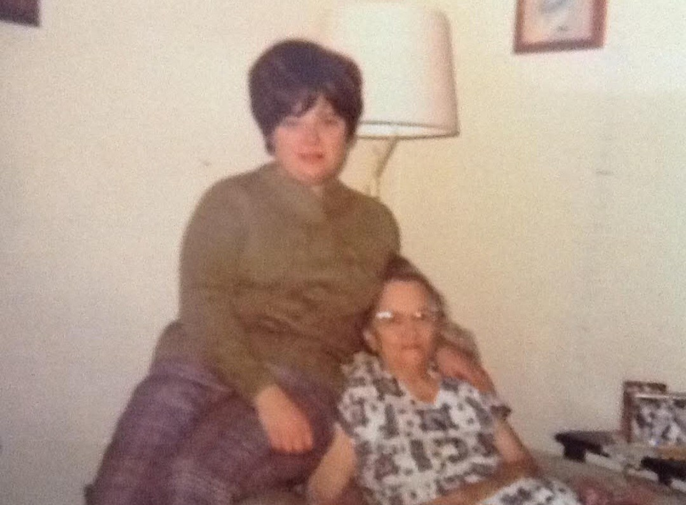
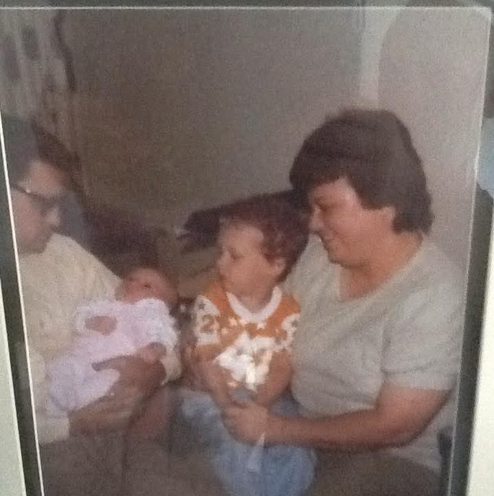
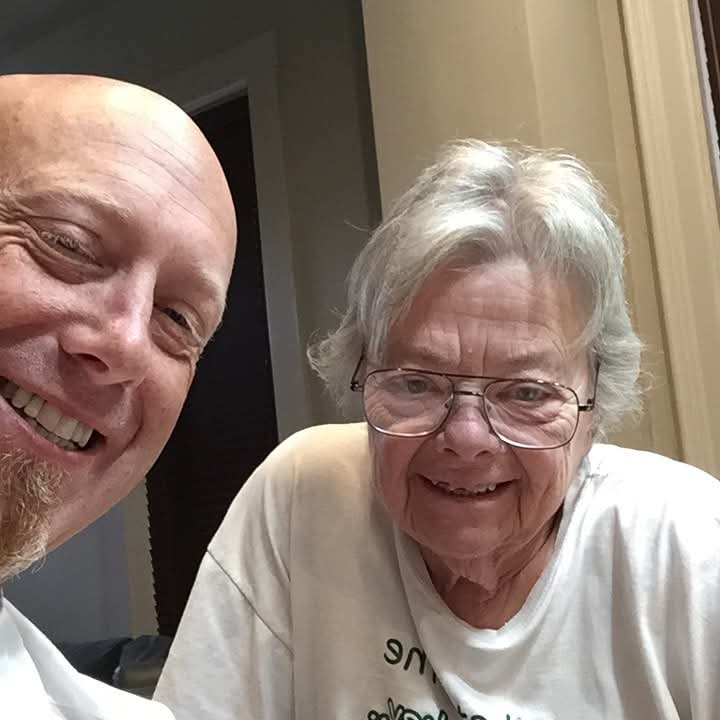

Also known as: Penny Palmer, Penny Spiess DOCUMENTED
Profile status: Living, details kept private
Penelope Jane Spiess is believed to be living, so her dates, places and life details are kept private. Only her name and the names of her closest family are shown.
Quick Facts
Name
Penelope Jane Spiess
Also known as
Penny Palmer (1963 obituary of her grandfather); Penny Spiess (1982 obituary of her grandmother, spelled "Speiss", and 2025 obituary of her cousin Robert W. Henderson) DOCUMENTED
Status
Living, details kept private
Immediate Family
Parents
William Peter PalmerSUPPORTED — 1963 and 1982 grandparents' obituaries; 2025 obituary of Robert W. Henderson Mary Jane WilliamsSUPPORTED — 1963 and 1982 grandparents' obituaries; 2025 obituary of Robert W. Henderson
Siblings
Judith Mae PalmerSUPPORTED — 1963 and 1982 grandparents' obituaries; 2025 obituary of Robert W. Henderson Mary Ann PalmerSUPPORTED — 1963 and 1982 grandparents' obituaries; 2025 obituary of Robert W. Henderson
Spouse
David Michael SpiessSUPPORTED — 1982 obituary of her grandmother; 2024 obituary of his brother Ronald P. Spiess
Penelope Jane "Penny" Spiess is a daughter of William Peter Palmer and Mary Jane WilliamsSUPPORTED, and a sister of Judith Mae Palmer and Mary Ann PalmerSUPPORTED. She is named among the grandchildren in the obituaries of her Palmer grandparents in 1963 (as "Penny Palmer") and 1982 (as "Penny Speiss"), and among the survivors in the 2025 obituary of her first cousin Robert W. Henderson SUPPORTED. She married David Michael SpiessSUPPORTED.
Photo Gallery

Penny (standing), with a woman believed to be her mother, Mary Jane (Williams) Palmer. Date not known. Family collection

Penny (right) holding a toddler, beside another adult holding a baby. The others are not yet identified. Date not known. Family collection

Penny with her son, David M. Spiess. Family collection
Sources and Evidence
Obituary of her grandfather Peter Palmer, died 14 December 1963, Cincinnati (newspaper clipping, Cincinnati & Hamilton County Public Library): grandchildren include "Mrs. Judith Brewster, Mary Anna and Penny Palmer" SUPPORTED
Obituary of her grandmother Margaret (Lorch) Palmer, died 25 October 1982, Cincinnati (newspaper clipping, Cincinnati & Hamilton County Public Library): grandchildren include "Judy Clark, Penny Speiss, Mary Ann Palmer" SUPPORTED
Obituary of Robert W. Henderson, Cincinnati Enquirer, June 2025: son of Anna V. Henderson (née Palmer); names Penny Spiess and Mary Ann Palmer among his survivors SUPPORTED
Geni online family tree: Penelope Jane Spiess profile 6000000152540978976
Grades: DOCUMENTED an original record says it · SUPPORTED several records point to it · FAMILY ACCOUNT the family's own telling · UNPROVED a lead, not proved.